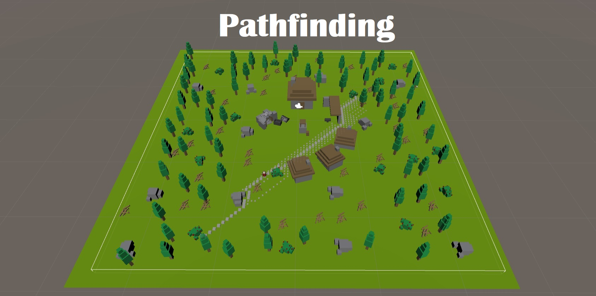

Introduction
The random generation was made for a project named Safe The Trees. In that project I also mad the inventory, crafting system, eco system, building, and interaction with building to change items. The crafting made it so you had to put the right amount of object in the right collom and the item that can be crafted will appear. The inventory was a simple drag and drop inventory system. The eco system made it so when a campfire was placed the ground could start burning or drying out. Also when cutting trees burnings and ground drying out would get more frequent. You could also craft buildables these are building that can be placed. There building can sometimes also be interacted with they could refine materials or cook materials. You have to choose what kind of oven you would make because some will effect nature more then others..jpg)
Random Generations
You can change settings random random generation based on if lakes form how much beach there is how many trees, stones, bushes spawn. You can also make the island and the surrounding sea smaller. You can deside how rough the sides will become and if the island prefers to grow horizontal over vertical. The randomization is mostly random with a little influence from the setting that have been given.It is currently not optimized very well. This wasn't the aim I went for since it is ment to make the island before building the game..jpg)
.jpg)
.jpg)